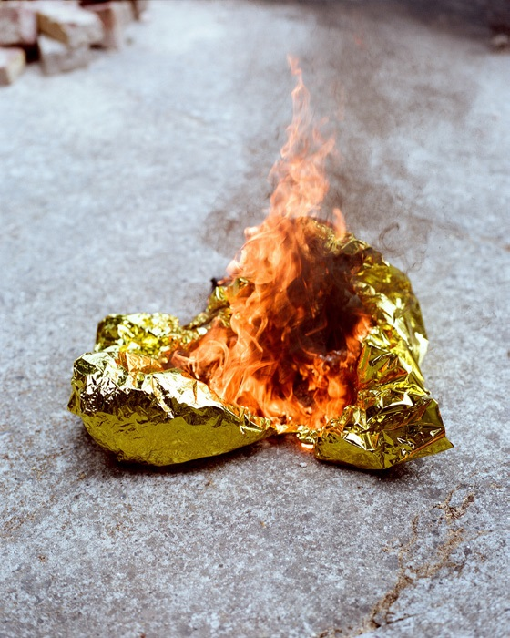
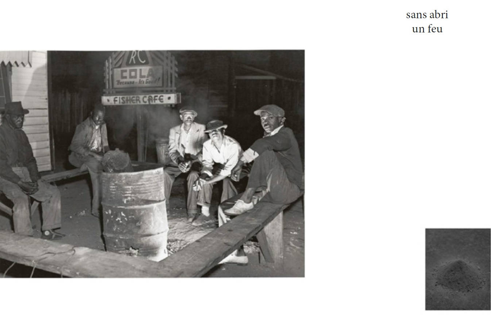
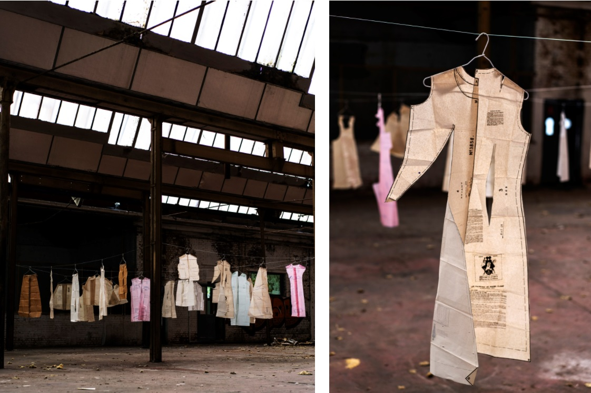
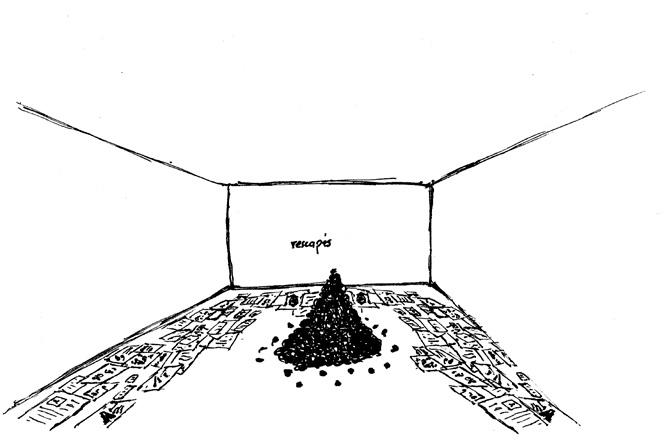
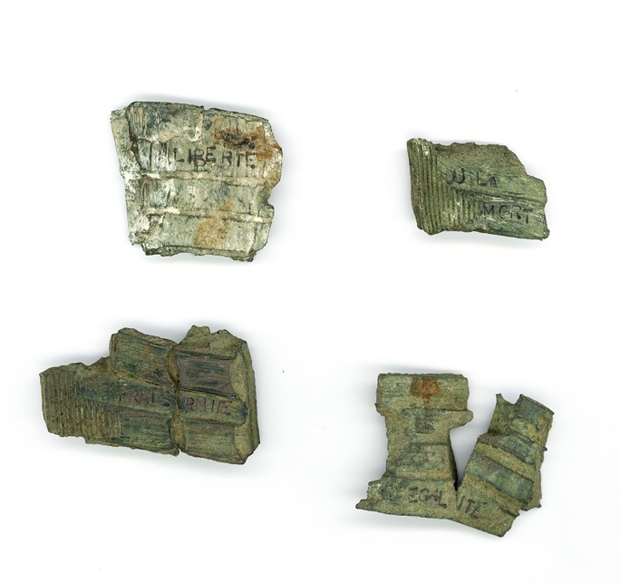
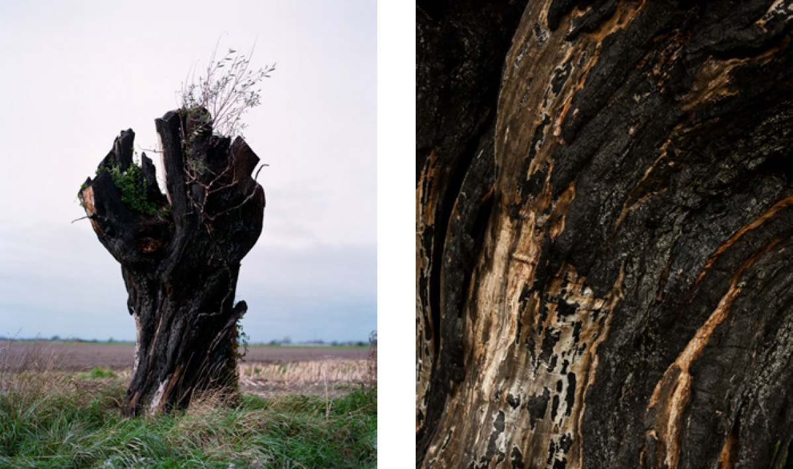
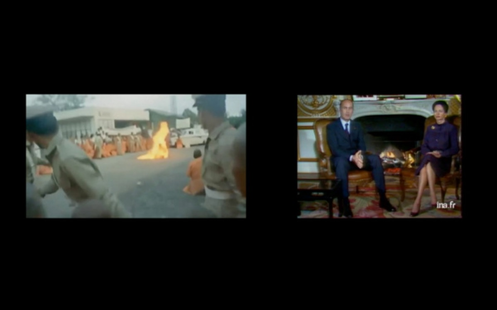
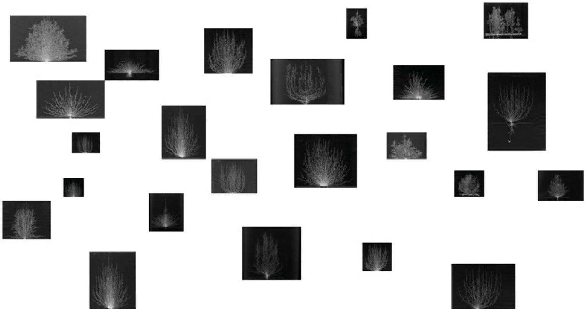
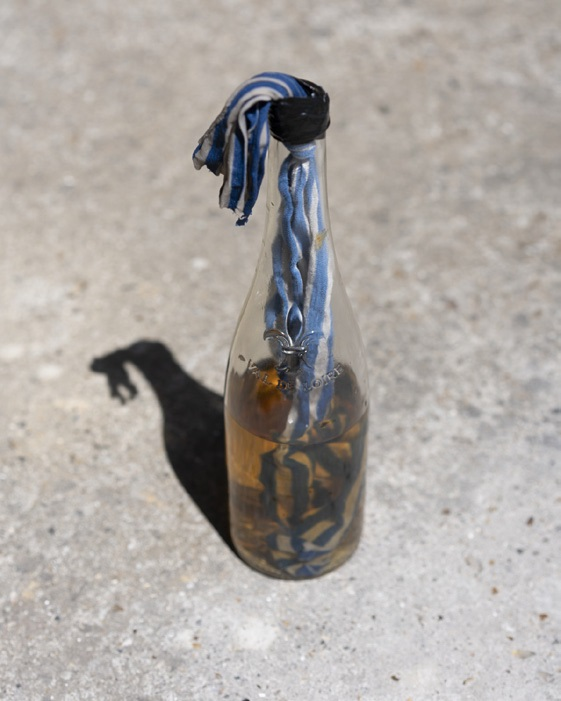
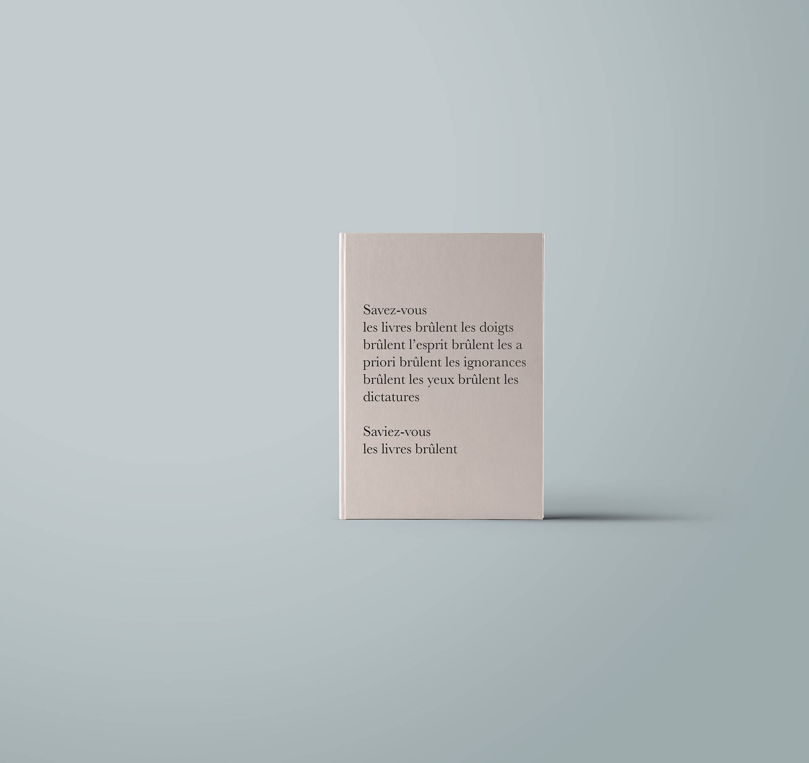

Feux
Feux est un atlas sensible des feux.
Du feu des cavernes, en passant par les feux politiques, les feux écologiques, les feux de guerre, les feux de religion, les feux symboliques, les feux géologiques ou encore artistiques, nous désirons traverser le temps et proposer une histoire de l’humanité à travers ses feux.
En fonction des plis, en fonction des directions, créer des collisions, des confrontations, des ramifications où se perdre, ou découvrir de nouveaux sens. De la poésie aussi.
La construction de Feux, en faisant appel à plusieurs matériaux et matérialités agit comme un ensemble de phonèmes qui articuleraient une langue.
Du feu des cavernes, en passant par les feux politiques, les feux écologiques, les feux de guerre, les feux de religion, les feux symboliques, les feux géologiques ou encore artistiques, nous désirons traverser le temps et proposer une histoire de l’humanité à travers ses feux.
En fonction des plis, en fonction des directions, créer des collisions, des confrontations, des ramifications où se perdre, ou découvrir de nouveaux sens. De la poésie aussi.
La construction de Feux, en faisant appel à plusieurs matériaux et matérialités agit comme un ensemble de phonèmes qui articuleraient une langue.
Calais
Série de 15 photographies
Couvertures de survie en feu
Couvertures de survie en feu

Formes du feu
Boucle vidéo, poème lu
Images d’archives
Images d’archives
Cendres
Sept triptyques
Image d’archive, poème, photographie
Image d’archive, poème, photographie

Incendie de la Triangle Factory
146 patrons sur cintre
Fil nylon
Fil nylon

Courrières
Tas de houille, "rescapés" écrit au mur à la houille
Des archives de la catastrophe de Courrières couvrent le sol
Œuvre participative, les visiteuses.eurs écrivent à leur tour au mur
Des archives de la catastrophe de Courrières couvrent le sol
Œuvre participative, les visiteuses.eurs écrivent à leur tour au mur

RESCAPÉ le mot est né
d’hommes
emmurés
avec
un feu
RESCAPÉS treize hommes à peine vivants hommes à peine
Maigres les yeux éblouis par la lumière hommes de peine
Trois semaines de marche aveugle dans les tunnels noirs de la mine
Nourris des provisions trouvées sur les cadavres et de la viande des chevaux morts
RESCAPÉS
Abandonnés, mille cents hommes abandonnés avec le feu
Gueules noires coup de poussière coup de grisou / Cent-dix
kilomètres de galeries balayés / Six cents hommes remontent
défigurés
scalpés nus brulés
Mille cents restent
Au fond de la mine
Au fond du feu
LA RENTABILITÉ AVANT LA SÉCURITÉ
La Compagnie des Mines décide
Il n’y a plus de survivants
La Compagnie des mines déclare
Retournez au charbon
Fosse 3 - Sous terre
On mure le feu
On mure les hommes
Un millier d’hommes
Sur terre
Les mineurs portent leurs camarades en terre
d’hommes
emmurés
avec
un feu
RESCAPÉS treize hommes à peine vivants hommes à peine
Maigres les yeux éblouis par la lumière hommes de peine
Trois semaines de marche aveugle dans les tunnels noirs de la mine
Nourris des provisions trouvées sur les cadavres et de la viande des chevaux morts
RESCAPÉS
Abandonnés, mille cents hommes abandonnés avec le feu
Gueules noires coup de poussière coup de grisou / Cent-dix
kilomètres de galeries balayés / Six cents hommes remontent
défigurés
scalpés nus brulés
Mille cents restent
Au fond de la mine
Au fond du feu
LA RENTABILITÉ AVANT LA SÉCURITÉ
La Compagnie des Mines décide
Il n’y a plus de survivants
La Compagnie des mines déclare
Retournez au charbon
Fosse 3 - Sous terre
On mure le feu
On mure les hommes
Un millier d’hommes
Sur terre
Les mineurs portent leurs camarades en terre
Liberté égalité fraternité ou la mort
47 éclats d’obus gravés

Pommier noir
Installation - un pommier carbonisé accroché au plafond
(vues de recherche)
(vues de recherche)

Corps politiques
2 téléviseurs face à face, au sol
2 boucles vidéo de 1’01’’
Valéry et Anne-Aymone Giscard d’Estaing au coin du feu
Immolation du moine Thích Quang Duc
2 boucles vidéo de 1’01’’
Valéry et Anne-Aymone Giscard d’Estaing au coin du feu
Immolation du moine Thích Quang Duc

CONSTRUIRE UN FEU
7 photographies
Poème
Poème
La longue nuit polaire attise
l’envie impatiente du feu
de ses dents bleues mord
pieds pas marche vers la mort son
étreinte glaciale frotte
ses mains sur l’homme solitaire
sa salive claque dans l’air
les biscuits ronronnent contre sa peau
Le chien sait
il faut construire un feu
peau blanche du bouleau contre
la peau froide du corps se fend
les muselières de glace ferment
les bouches les conversations le souffle
le dernier
sous les étoiles
claque dans l’air
l’envie impatiente du feu
de ses dents bleues mord
pieds pas marche vers la mort son
étreinte glaciale frotte
ses mains sur l’homme solitaire
sa salive claque dans l’air
les biscuits ronronnent contre sa peau
Le chien sait
il faut construire un feu
peau blanche du bouleau contre
la peau froide du corps se fend
les muselières de glace ferment
les bouches les conversations le souffle
le dernier
sous les étoiles
claque dans l’air
Les racines du feu
All over
Dessins de systèmes racinaires de plantes
Poème au mur
Dessins de systèmes racinaires de plantes
Poème au mur

Feux de forêts
Cathédrales
Flèches
Les hommes
Franchissent
Les flammes
Sans jamais
Revenir
Cathédrales
Flèches
Les hommes
Franchissent
Les flammes
Sans jamais
Revenir
Molotov
121 cocktails molotov

Autodafé
Bûcher de livres

L'étincelle : le livre Feux paru aux éditions Bruno Doucey.